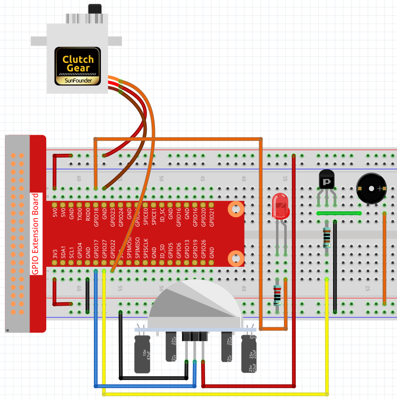

Note
Bonjour et bienvenue dans la communauté des passionnés de SunFounder Raspberry Pi & Arduino & ESP32 sur Facebook ! Plongez dans l’univers du Raspberry Pi, d’Arduino et de l’ESP32 avec d’autres passionnés.
Pourquoi nous rejoindre ?
Support d’experts : Résolvez les problèmes après-vente et les défis techniques grâce à l’aide de notre communauté et de notre équipe.
Apprendre & Partager : Échangez des astuces et des tutoriels pour améliorer vos compétences.
Aperçus exclusifs : Recevez des annonces anticipées sur les nouveaux produits et des aperçus exclusifs.
Réductions spéciales : Profitez de réductions exclusives sur nos produits les plus récents.
Promotions festives et tirages au sort : Participez à des concours et promotions pendant les fêtes.
üëâ Pr√™t √† explorer et cr√©er avec nous ? Cliquez sur [Ici] et rejoignez-nous d√®s aujourd‚Äôhui !
3.1.2 Bienvenue
Introduction
Dans ce projet, nous utiliserons un capteur PIR pour détecter le mouvement des piétons, ainsi qu’un servo, une LED et un buzzer pour simuler le fonctionnement de la porte automatique d’un magasin. Lorsque le piéton entre dans la zone de détection du capteur PIR, le voyant s’allume, la porte s’ouvre, et le buzzer joue une mélodie d’ouverture.
Composants

Schéma
T-Board Name |
physical |
wiringPi |
BCM |
GPIO18 |
Pin 12 |
1 |
18 |
GPIO17 |
Pin 11 |
0 |
17 |
GPIO27 |
Pin 13 |
2 |
27 |
GPIO22 |
Pin 15 |
3 |
22 |

Procédures expérimentales
Étape 1 : Construisez le circuit.
{kind=link}
Pour les utilisateurs du langage C
Étape 2 : Changez de répertoire.
cd ~/davinci-kit-for-raspberry-pi/c/3.1.2/
Étape 3 : Compilation.
gcc 3.1.2_Welcome.c -lwiringPi
Étape 4 : Exécution.
sudo ./a.out
Une fois le code exécuté, si le capteur PIR détecte quelqu’un passant à proximité, la porte s’ouvrira automatiquement (simulée par le servo), le voyant s’allumera et la mélodie de la sonnette retentira. Après la mélodie, le système refermera automatiquement la porte et éteindra le voyant, en attente du prochain passage.
Le module PIR est équipé de deux potentiomètres : l’un pour régler la sensibilité et l’autre pour ajuster la distance de détection. Pour optimiser le fonctionnement du module PIR, vous devez les tourner complètement dans le sens antihoraire.
Note
Si cela ne fonctionne pas après l’exécution, ou s’il y a un message d’erreur : "wiringPi.h: No such file or directory", veuillez consulter C code is not working?.
Explication du code
void setAngle(int pin, int angle){ // Créer une fonction pour contrôler l'angle du servo.
if(angle < 0)
angle = 0;
if(angle > 180)
angle = 180;
softPwmWrite(pin,Map(angle, 0, 180, 5, 25));
}
Création de la fonction setAngle pour définir l’angle du servo entre 0 et 180 degrés.
void doorbell(){
for(int i=0;i<sizeof(song)/4;i++){
softToneWrite(BuzPin, song[i]);
delay(beat[i] * 250);
}
Création de la fonction doorbell pour faire jouer une mélodie par le buzzer.
void closedoor(){
digitalWrite(ledPin, LOW); // Éteindre la LED
for(int i=180;i>-1;i--){ // Faire pivoter le servo de l'angle maximum à l'angle minimum
setAngle(servoPin,i);
delay(1);
}
}
Création de la fonction closedoor pour simuler la fermeture de la porte, éteindre la LED et faire pivoter le servo de 180 degrés à 0 degré.
void opendoor(){
digitalWrite(ledPin, HIGH); // Allumer la LED
for(int i=0;i<181;i++){ // Faire pivoter le servo de l'angle minimum à l'angle maximum
setAngle(servoPin,i);
delay(1);
}
doorbell();
closedoor();
}
La fonction opendoor() comporte plusieurs étapes : allumer la lumière indicatrice, faire pivoter le servo (simulant l’ouverture de la porte), jouer la mélodie de la sonnette et appeler la fonction closedoor() après la musique.
int main(void)
{
if(wiringPiSetup() == -1){ // Si l'initialisation de wiringPi échoue, afficher un message à l'écran
printf("setup wiringPi failed !");
return 1;
}
if(softToneCreate(BuzPin) == -1){
printf("setup softTone failed !");
return 1;
......
Dans la fonction main(), initialisez la bibliothèque wiringPi et configurez softTone, puis définissez ledPin en mode sortie et pirPin en mode entrée. Si le capteur PIR détecte une personne passant à proximité, la fonction opendoor sera appelée pour simuler l’ouverture de la porte.
Pour les utilisateurs du langage Python
Étape 2 : Changer de répertoire.
cd ~/davinci-kit-for-raspberry-pi/python/
Étape 3 : Exécuter.
sudo python3 3.1.2_Welcome.py
Une fois le code exécuté, si le capteur PIR détecte le passage d’une personne, la porte s’ouvrira automatiquement (simulée par le servo), la lumière indicatrice s’allumera et la mélodie de la sonnette retentira. Après la mélodie, le système refermera automatiquement la porte et éteindra la lumière indicatrice, en attente du prochain passage.
Le module PIR est équipé de deux potentiomètres : l’un pour régler la sensibilité et l’autre pour ajuster la distance de détection. Pour optimiser le fonctionnement du module PIR, tournez-les complètement dans le sens antihoraire.
code
Note
Vous pouvez Modifier/Réinitialiser/Copier/Exécuter/Arrêter le code ci-dessous. Mais avant cela, vous devez vous rendre dans le chemin du code source tel que davinci-kit-for-raspberry-pi/python.
import RPi.GPIO as GPIO
import time
SERVO_MIN_PULSE = 500
SERVO_MAX_PULSE = 2500
ledPin = 18 # définir le ledPin
pirPin = 17 # définir le sensorPin
servoPin = 22 # définir le servoPin
buzPin = 27 # définir le buzzerPin
CL = [0, 131, 147, 165, 175, 196, 211, 248] # Fréquences des notes C basses
CM = [0, 262, 294, 330, 350, 393, 441, 495] # Fréquences des notes C moyennes
CH = [0, 525, 589, 661, 700, 786, 882, 990] # Fréquences des notes C hautes
song = [ CH[5],CH[2],CM[6],CH[2],CH[3],CH[6],CH[3],CH[5],CH[3],CM[6],CH[2] ]
beat = [ 1,1,1,1,1,2,1,1,1,1,1,]
def setup():
global p
global Buzz # Déclaration d'une variable globale pour remplacer GPIO.PWM
GPIO.setmode(GPIO.BCM) # Numérotation des GPIOs par leur emplacement physique
GPIO.setup(ledPin, GPIO.OUT) # Configuration de ledPin en mode sortie
GPIO.setup(pirPin, GPIO.IN) # Configuration de pirPin en mode entrée
GPIO.setup(servoPin, GPIO.OUT) # Configuration de servoPin en mode sortie
GPIO.output(servoPin, GPIO.LOW) # Mise du servoPin à l'état bas
GPIO.setup(buzPin, GPIO.OUT) # Configuration de buzPin en mode sortie
Buzz = GPIO.PWM(buzPin, 440) # 440 est la fréquence initiale.
Buzz.start(50) # Démarrage du buzzer avec un rapport cyclique de 50 %
p = GPIO.PWM(servoPin, 50) # Réglage de la fréquence à 50 Hz
p.start(0) # Rapport cyclique à 0
def map(value, inMin, inMax, outMin, outMax):
return (outMax - outMin) * (value - inMin) / (inMax - inMin) + outMin
def setAngle(angle): # Faire tourner le servo à un angle spécifique (0-180 degrés)
angle = max(0, min(180, angle))
pulse_width = map(angle, 0, 180, SERVO_MIN_PULSE, SERVO_MAX_PULSE)
pwm = map(pulse_width, 0, 20000, 0, 100)
p.ChangeDutyCycle(pwm) # Conversion de l'angle en rapport cyclique et sortie vers le servo
def doorbell():
for i in range(1, len(song)): # Jouer la chanson 1
Buzz.ChangeFrequency(song[i]) # Changer la fréquence selon les notes de la chanson
time.sleep(beat[i] * 0.25) # Délai correspondant au battement * 0,25 s
time.sleep(1) # Attendre une seconde avant la chanson suivante.
def closedoor():
GPIO.output(ledPin, GPIO.LOW)
for i in range(180, -1, -1): # Faire pivoter le servo de 180 à 0 degrés
setAngle(i)
time.sleep(0.001)
time.sleep(1)
def opendoor():
GPIO.output(ledPin, GPIO.LOW)
for i in range(0, 181, 1): # Faire pivoter le servo de 0 à 180 degrés
setAngle(i) # Commande au servo
time.sleep(0.001)
time.sleep(1)
doorbell()
closedoor()
def loop():
while True:
if GPIO.input(pirPin)==GPIO.HIGH:
opendoor()
def destroy():
GPIO.cleanup() # Libération des ressources
p.stop()
Buzz.stop()
if __name__ == '__main__': # Le programme commence ici
setup()
try:
loop()
except KeyboardInterrupt: # Lorsque 'Ctrl+C' est pressé, la fonction destroy() sera exécutée.
destroy()
Explication du code
def setup():
global p
global Buzz # Déclaration d'une variable globale pour remplacer GPIO.PWM
GPIO.setmode(GPIO.BCM) # Numérotation des GPIOs par leur emplacement physique
GPIO.setup(ledPin, GPIO.OUT) # Configuration de ledPin en mode sortie
GPIO.setup(pirPin, GPIO.IN) # Configuration de pirPin en mode entrée
GPIO.setup(buzPin, GPIO.OUT) # Configuration de buzPin en mode sortie
Buzz = GPIO.PWM(buzPin, 440) # 440 est la fréquence initiale.
Buzz.start(50) # Démarrage du buzzer avec un rapport cyclique de 50 %
GPIO.setup(servoPin, GPIO.OUT) # Configuration de servoPin en mode sortie
GPIO.output(servoPin, GPIO.LOW) # Mise du servoPin à l'état bas
p = GPIO.PWM(servoPin, 50) # Réglage de la fréquence à 50 Hz
p.start(0) # Rapport cyclique à 0
Ces instructions sont utilisées pour initialiser les broches de chaque composant.
def setAngle(angle): # Faire tourner le servo à un angle spécifique (0-180 degrés)
angle = max(0, min(180, angle))
pulse_width = map(angle, 0, 180, SERVO_MIN_PULSE, SERVO_MAX_PULSE)
pwm = map(pulse_width, 0, 20000, 0, 100)
p.ChangeDutyCycle(pwm) # Conversion de l'angle en rapport cyclique et sortie vers le servo
Création d’une fonction servowrite pour écrire l’angle dans le servo entre 0 et 180 degrés.
def doorbell():
for i in range(1,len(song)): # Jouer la chanson 1
Buzz.ChangeFrequency(song[i]) # Changer la fréquence selon les notes de la chanson
time.sleep(beat[i] * 0.25) # Délai d'une note pour beat * 0,25 s
Création d’une fonction doorbell pour permettre au buzzer de jouer de la musique.
def closedoor():
GPIO.output(ledPin, GPIO.LOW)
Buzz.ChangeFrequency(1)
for i in range(180, -1, -1): # Faire pivoter le servo de 180 à 0 degrés
setAngle(i)
time.sleep(0.001)
Fermer la porte et éteindre le voyant lumineux.
def opendoor():
GPIO.output(ledPin, GPIO.LOW)
for i in range(0, 181, 1): # Faire pivoter le servo de 0 à 180 degrés
setAngle(i) # Commande au servo
time.sleep(0.001)
doorbell()
closedoor()
La fonction opendoor() comporte plusieurs étapes : allumer le voyant, faire pivoter le servo (pour simuler l’ouverture de la porte), jouer la musique de la sonnette et appeler la fonction closedoor() après la musique.
def loop():
while True:
if GPIO.input(pirPin)==GPIO.HIGH:
opendoor()
Lorsque le capteur PIR détecte une personne passant à proximité, il appelle la fonction opendoor().
Image du phénomène